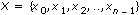
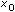
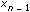
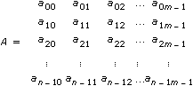
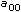
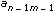
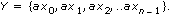
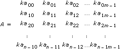

, and b = 1.234.
, and b = 1.234.
To help you identify the type of parameters and operations, this help file uses the following notation and naming conventions unless otherwise specified in a VI description. Although there are a few scalar functions and operations, most of the analysis VIs process large blocks of data in the form of one-dimensional arrays, or vectors, and two-dimensional arrays, or matrices.
All variables are in italics.
Lowercase letters represent scalars or constants, for example, a, , and b = 1.234.
Capital letters represent arrays, for example, X, A, and Y = aX + b. X and Y generally denote 1D arrays. A, B, and C generally represent matrices.
Array indexes in LabVIEW are zero-based. The index of the first element in the array, regardless of its dimension, is zero. The following sequence of numbers represents a 1D array X containing n elements.

The following scalar quantity represents the ith element of the sequence X.
Xi 0  i n–1
i n–1
The first element in the sequence is  and the last element in the sequence is  for a total of n elements.
The following sequence of numbers represents a 2D array containing n rows and m columns.

The total number of elements in the 2D array is the product of n and m. The first index corresponds to the row number. The second index corresponds to the column number. The following scalar quantity represents the element located on the ith row and the jth column.
aij 0 i n– 1 and 0 j m – 1
The first element in A is . The last element in A is .
Unless otherwise specified, this help file uses the following simplified array operation notations.
Setting the elements of an array to a scalar constant is represented by
X = a,
which corresponds to the sequence
X = {a, a, a, …, a}.
X = a is used instead of
xi = a
for i = 0, 1, 2,.., n– 1
Multiplying the elements of an array by a scalar constant is represented by
Y = aX,
which corresponds to the sequence

Y = aX is used instead of
yi = axi
for i = 0, 1, 2,.., n– 1
Similarly, multiplying a 2D array by a scalar constant is represented by
B = kA,
which corresponds to the following sequence.

B = kA is used instead of
bij = kaij
for i = 0, 1, 2, .., n – 1 and j = 0, 1, 2, …, m – 1
An array with no elements is an empty array and is represented by
Empty = NULL = = { }.
In general, operations on empty arrays result in empty output arrays or undefined results.